Most people who quit on a home workout habit aren't quitting on fitness, they're quitting on a setup that made training harder than it needed to be. A practical home gym removes friction instead of just adding equipment, and that distinction is what actually keeps a habit alive past the first few weeks.
Driving to a gym costs time, waiting for equipment costs patience, and both of those disappear the moment a workout space exists at home. Consistency reliably beats motivation, motivation fades fast, but a setup that's already there stops workouts from ever feeling optional.

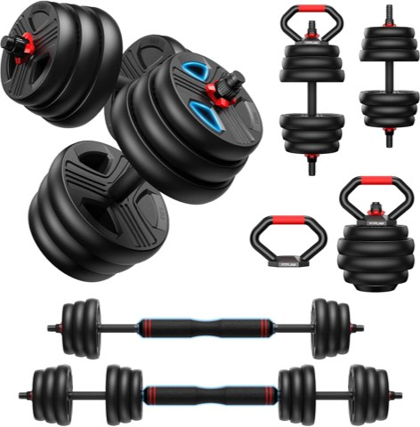
Adjustable Dumbbell Set, 20 to 90 lb, Free Weights Set with Upgraded Nut
Shop on AmazonWhat Separates a Gym People Use From One That Collects Dust
A good setup supports the habit. A bad one just creates guilt every time it's walked past. Equipment placement matters more than style, when gear stays visible and within reach, workouts actually happen, and when it's buried in a closet, they quietly stop.
Comfort plays a bigger role than people give it credit for, too. Flooring, lighting, and airflow all affect whether a space feels good to be in, and that feeling is often the difference between a five-minute session and a skipped one.
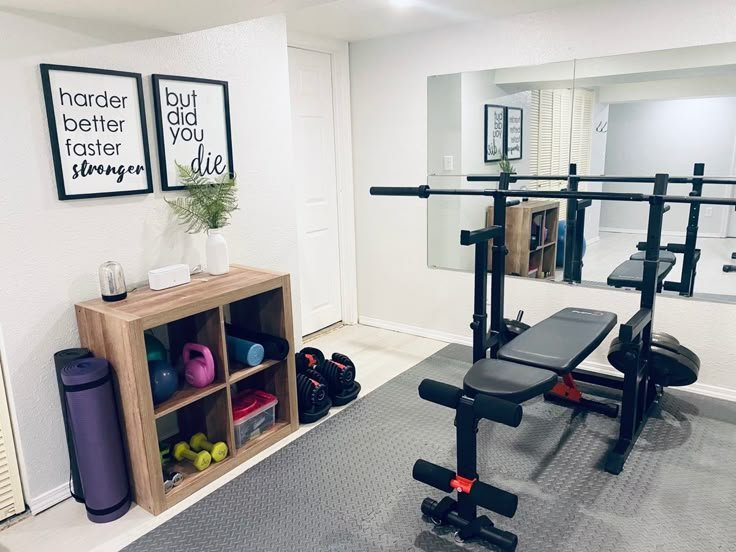
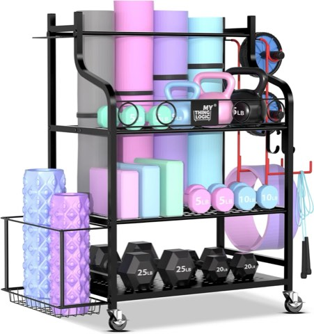
Mythinglogic Home Gym Rack for Dumbbells, Yoga Mats and Workout Equipment
Shop on Amazon14 Practical Home Gym Ideas
1. Remove Every Excuse, Completely
This setup exists for one purpose: eliminating every possible reason a workout gets skipped.
Equipment stays out where it can't be ignored, the setup takes seconds, and nothing about starting requires planning ahead of time.
When the friction disappears completely, the workout stops being a decision and starts being something that just happens on its own.
2. Design for Long-Term, Scalable Growth
A gym built with only today's fitness level in mind gets outgrown fast. Designing with room to scale avoids that problem entirely.
Start with versatile basics and add equipment slowly as actual needs change, rather than buying for a future fitness level that hasn't arrived yet.
Single-purpose machines are the first thing to collect dust once needs shift. Equipment that adapts alongside the person using it holds its value far longer.
3. Protect Joints With a Low-Impact Setup
Not every workout needs to be high intensity to actually work, and a low-impact setup proves that especially well during recovery phases.
Resistance bands, a stationary bike, and bodyweight movements all build real strength without the joint strain that heavier impact training can cause.
Consistency beats intensity here. Protecting the joints now is what keeps training possible years down the line, not just this month.
4. Create a Family-Friendly Setup
Fitness gets easier to stick with once it feels normal, and a family-friendly gym is one of the fastest ways to build that in.
Kid-safe equipment, a shared mat area, and gear sized for different ages let everyone join in at their own level instead of training separately.
Safety still comes first, heavy equipment secured properly and basic respect for the gear taught early keeps the whole setup genuinely safe to share.
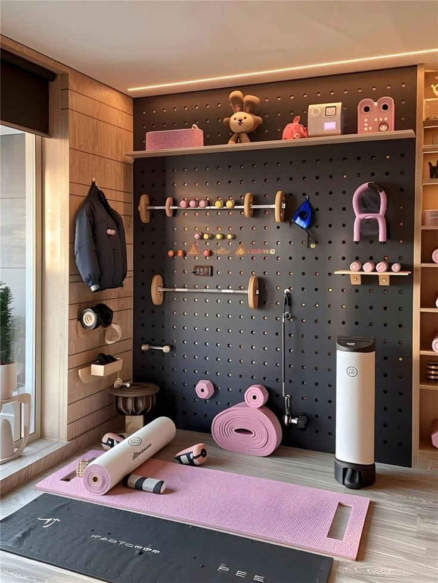
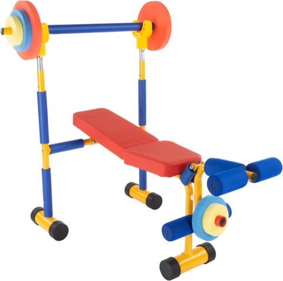
Hey! Play! Kids Exercise Equipment Collection, Strength Training and Cardio
Shop on Amazon5. Build in Visual Motivation
Motivation fades fast on its own, but a few visual cues in the space help a system take over where motivation runs out.
A whiteboard with weekly goals, a progress tracker, or even just gear left visible rather than stored away all reinforce the habit simply by being seen.
Sound matters too, music changes training intensity almost instantly, while a quieter space suits anything slower like yoga or stretching.
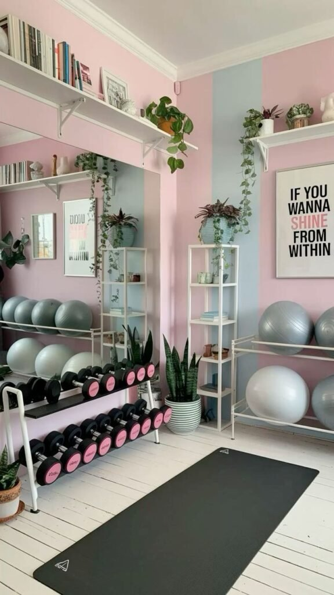
6. Make It Multifunctional for a Shared Space
Not everyone gets a dedicated room, and a living room or bedroom corner can still do the job with the right equipment choices.
Gear that folds, stacks, or rolls away, a foldable bench, a storage ottoman doubling as weight storage, lets the room switch roles without any stress.
Speed matters most here. The faster the setup, the less likely the workout gets skipped because the room wasn't ready in time.
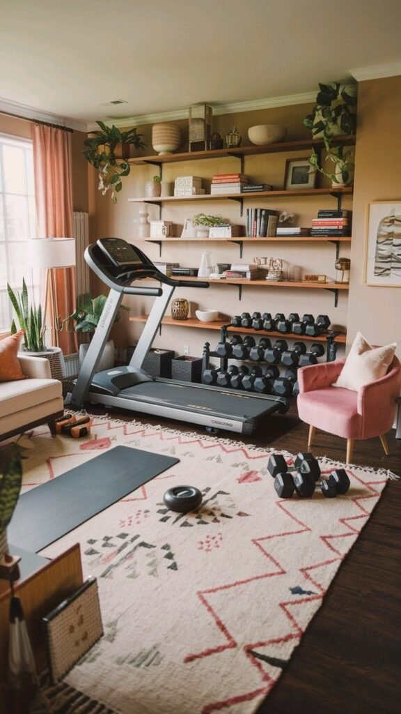
7. Design a Gym That's Both Aesthetic and Practical
Style and function aren't actually at odds here, whatever the usual advice says. A space that looks intentional gets used more often than one that looks thrown together.
Matching equipment finishes, a clean storage rack, and good lighting turn a workout corner into a space worth walking into.
The goal is a room that invites movement instead of avoidance, this approach works especially well for anyone who responds to visual motivation.
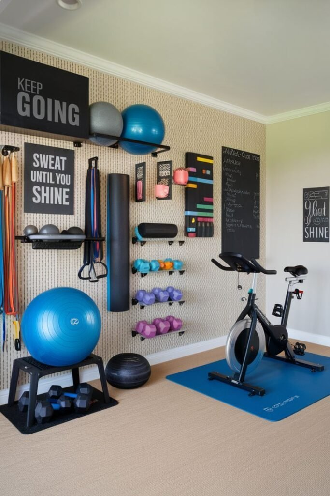
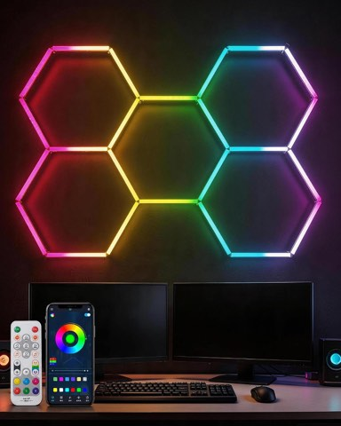
RGB Hexagon LED Garage Lights, 5 Grid, Smart App Control with Music Sync
Shop on Amazon8. Start Simple as a Beginner
An overcomplicated setup scares beginners off before they even get started. Simplicity is what actually gets someone through the first few months.
Resistance bands, a mat, and a light set of dumbbells cover everything needed to build real consistency before intensity ever becomes the priority.
Training at home also removes the social pressure of a crowded gym floor, which tends to speed up how fast confidence actually builds.
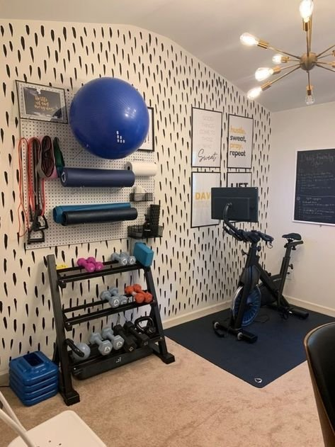
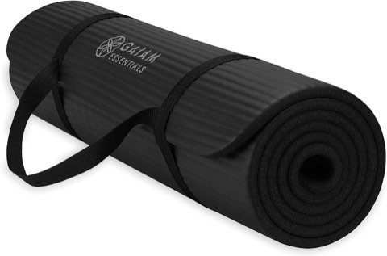
Gaiam Thick Yoga Mat, Exercise and Fitness Mat with Easy-Cinch Carrying Strap
Shop on Amazon9. Make Cardio a Setup You Actually Enjoy
Cardio shouldn't feel like a punishment, and the equipment choice has more influence over that than most people expect going in.
A treadmill, rowing machine, or stationary bike all work, the right pick is whichever one someone will actually return to, not whichever burns the most calories on paper.
Mixing styles across sessions prevents the boredom that kills consistency faster than any single workout ever could on its own.
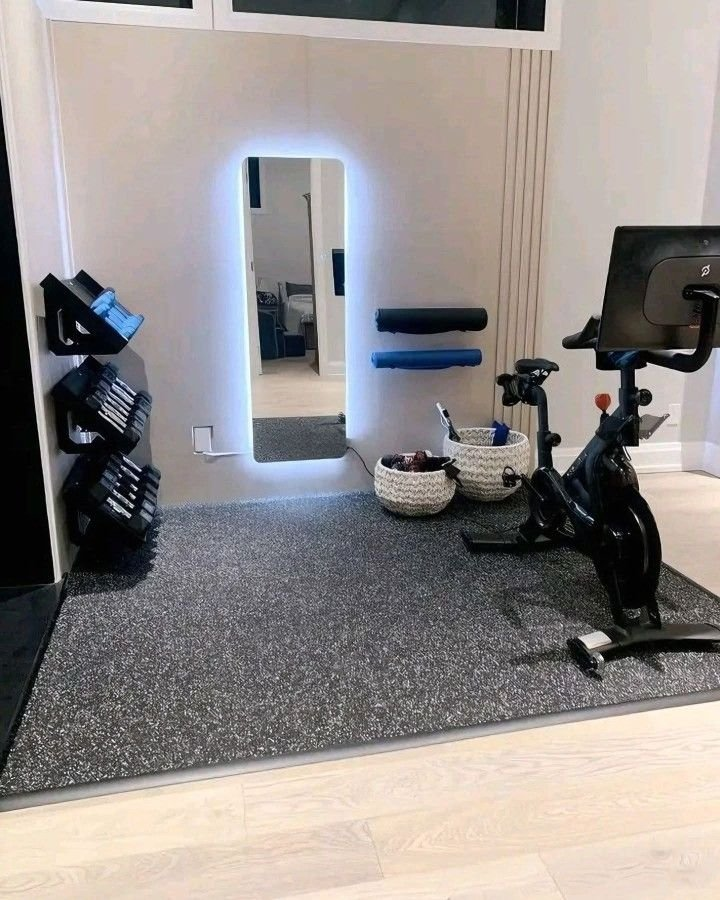
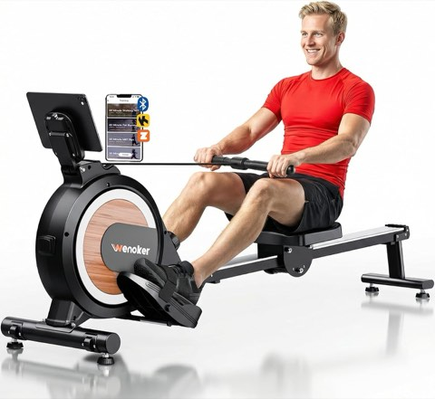
Wenoker Magnetic Rowing Machine for Home, Quiet and Smooth, Full Body Workout
Shop on Amazon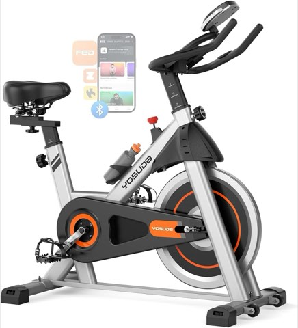
YOSUDA Magnetic Exercise Bike with App Training, Stationary Indoor Bike
Shop on Amazon10. Prioritize Strength With Free Weights
Strength training builds confidence quickly, and free weights consistently outperform machines for that exact purpose.
Free weights force real control and coordination in a way a guided machine never has to, compound movements with a barbell or dumbbells deliver more in less time than a circuit of isolated machines.
Safety matters just as much as intensity here. Collars, a proper rack, and controlled reps keep training sustainable instead of ending progress with an injury.
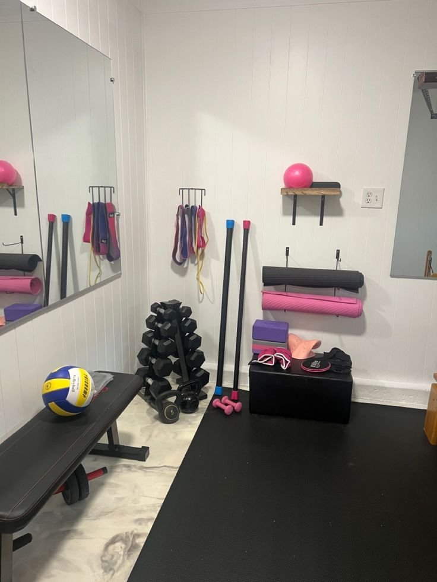
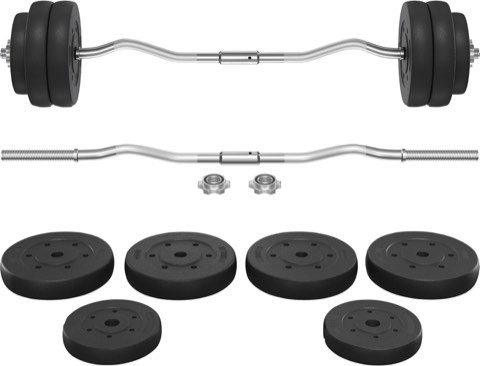
Yaheetech Curl Bar with Weights, Adjustable W-Shaped Barbell Home Gym Set
Shop on Amazon11. Set Up an Apartment-Friendly Gym
Apartments come with their own constraints, noise limits and tight square footage chief among them.
Quiet equipment solves most of it: resistance bands, a yoga mat, and dumbbells instead of anything involving jumping or dropped weights that travel straight through a floor.
A foldable bench or a vertical rack that tucks gear away after each session keeps the apartment feeling like an apartment again once the workout's done.
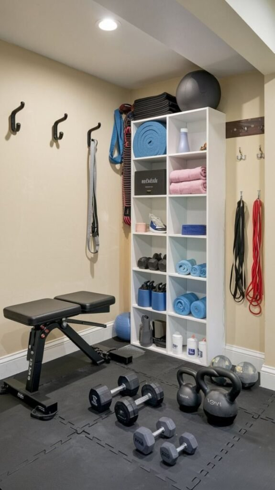
12. Build a Budget-Friendly Gym That Still Delivers
Money shouldn't be the thing blocking a real fitness setup. Smart choices matter more than spending power here.
Put the budget toward a few genuinely versatile pieces, an adjustable bench, a solid set of dumbbells, rather than single-use machines that only do one thing.
Price doesn't equal effectiveness. Programming and movement quality drive results far more than how much the equipment cost.
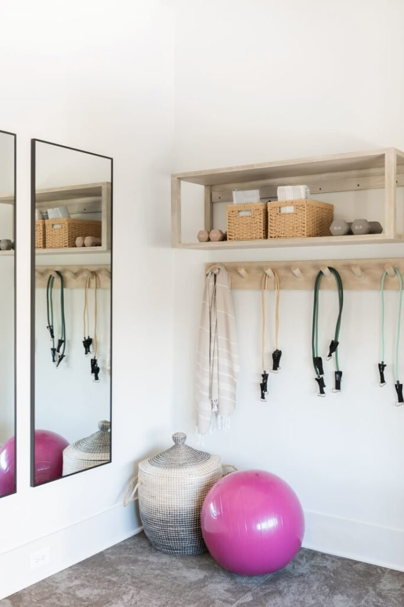
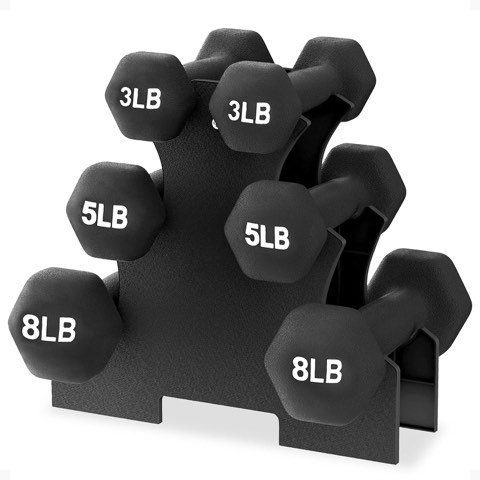
BalanceFrom Neoprene Dumbbell Set with Rack, Non-Slip Strength Training Weights
Shop on Amazon13. Fit a Real Gym Into a Small Space
A dedicated room isn't required, a corner that barely fits a yoga mat is enough space to train effectively.
Wall-mounted hooks and shelves clear the floor instantly, keeping resistance bands, mats, and smaller equipment off the ground and the room feeling organized instead of chaotic.
A mirror does more than help with form here, it also makes a small space read as larger than it actually is, which matters more than it sounds like it should.
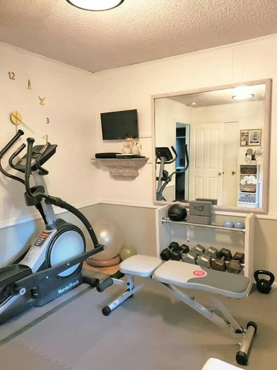
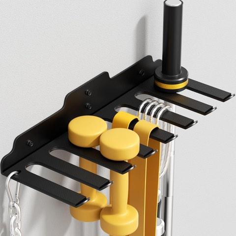
JNIHEEP Olympic Barbell Hanger, Vertical Wall Mount Bar Rack for Garage Gym
Shop on Amazon14. Go Minimal to Remove Decision Fatigue
A minimal setup works precisely because it removes choices. When there's nothing to decide, there's nothing standing between showing up and actually training.
A pair of adjustable dumbbells, a mat, resistance bands, and a jump rope cover strength, mobility, and conditioning without needing anything else.
This setup fits beginners and busy people equally well, when complexity disappears, so does the excuse to skip it.
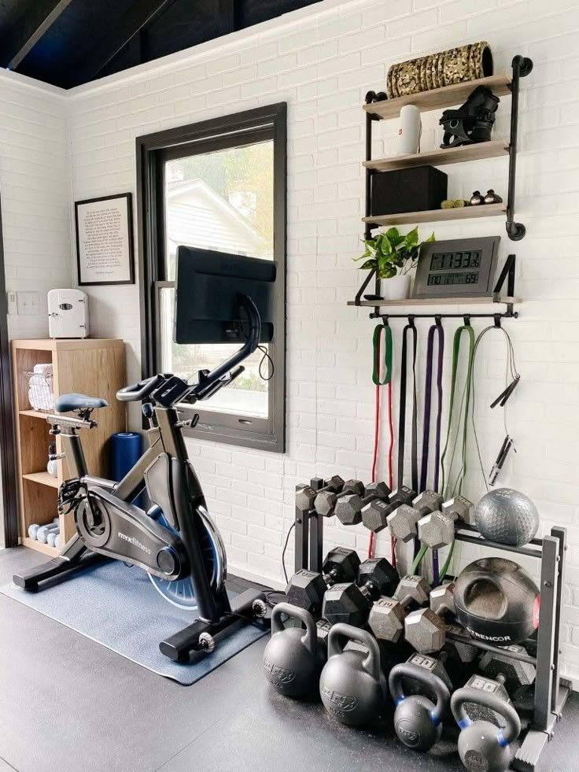
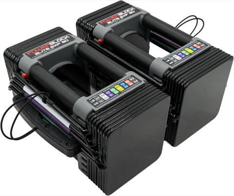
PowerBlock Elite EXP 90 Adjustable Dumbbells, Stage 1, Set of 2, 5 to 50 lb
Shop on Amazon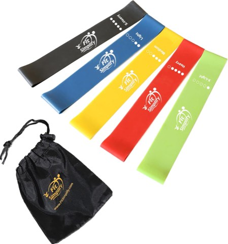
Fit Simplify Resistance Loop Exercise Bands, Set of 5, with Guide and Carry Bag
Shop on AmazonFinal Thoughts
The best home gym setups focus on usability over perfection. A gym that looks impressive but feels inconvenient gets abandoned fast, while one that makes training genuinely easy keeps getting used long after the initial motivation fades.
Start small, build with intention, and remember the best home gym was never going to be the fanciest one, it's the one that's actually there when motivation runs low and the excuses start sounding reasonable.